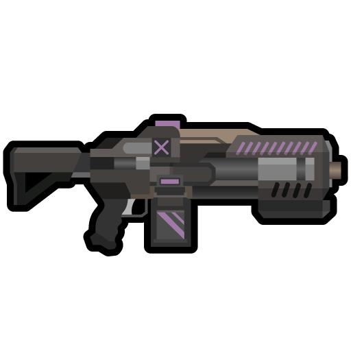

魅狐机械师电荷步枪Kurin_Gun_Mechanic_Charge_Rifle

Things/KurinWeapon/Mechanic_Charge_Rifle
射程 30.9 · 预热 1.2 · 近战 stock·barrel · 重 4.7 · 科研 Kurin_CombatT4
魅狐机械师所使用的电荷步枪，伤害和穿甲弱于电荷步枪，但它可以为魅狐机械师提供培育速度，维修速度和机械体工作速度加成。